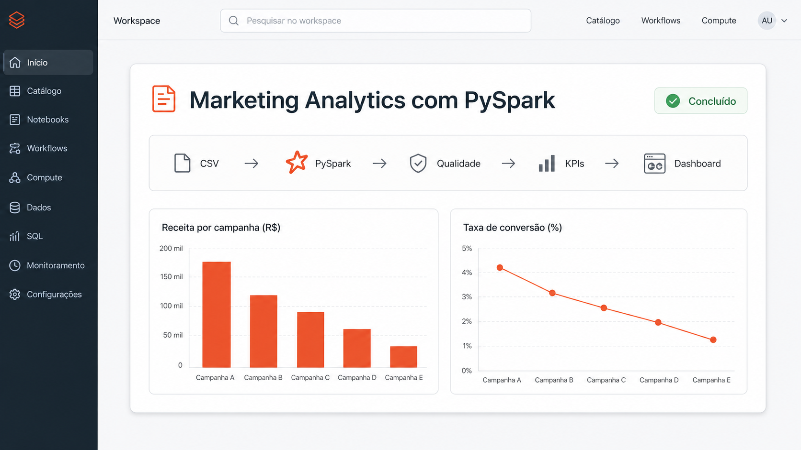

Abrir dashboard
Engenharia de Dados / Marketing Analytics
Marketing Analytics com PySpark
O case começou com uma pergunta simples: estamos enviando muitos e-mails, mas eles realmente geram resultado? Eu conectei clientes, campanhas, interações e vendas para separar abertura de conversão e receita.
- Problema real: dados separados e métricas sem uma visão única da jornada.
- Prioridade: garantir qualidade e conectar contato, clique, compra e receita.
- Entrega: PySpark, CSV/Parquet, testes, gráficos e dashboard interativo.